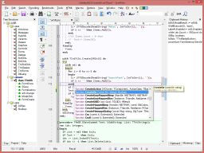
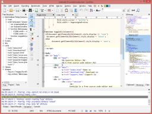

SynWrite combines great ideas from many well known editors into a single, freely available product. It's a complete environment for Web workers, coders and writers.
SynWrite's many features include macro recording, code highlighting, code folding, multi-caret editing and regular expressions. (See feature list below.)
You can easily extend the editor with plugins written in the Python scripting language. Many plugins are available here, and you can write your own.
You can easily configure it to your needs and even take it with you on a USB flash drive. It's free, open-source software.
|  |  |
 |
|
SynWrite featuresFully customizable syntax highlighting for many languages (see list) Code folding Supports almost all encoding systems (ASCII, Unicode, etc.) Multiple-caret editing (see animation) Multiple selections (see animation) Panels:
Search and replace in multiple files Use external tools (capture console output, navigation to error lines) Use Python-based plugins Use binary plugins (e.g. Explorer panel and FTP client are plugins) Regex-based strings extraction Customizable hotkeys Bookmarks Key macros Spell checker File sessions Plugin for "Total Commander" file manager Multilingual interface: German, French, Russian, Spanish, Italian, Japanese, Chinese, etc. Integrated HTML Tidy library Export to RTF/HTML with syntax highlighting Portable mode ...and more! |